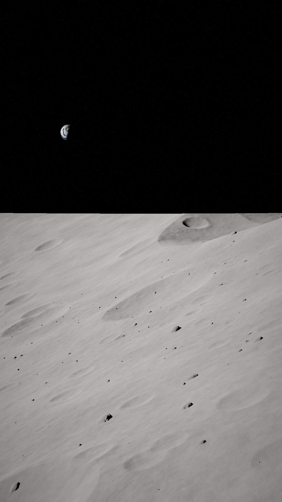
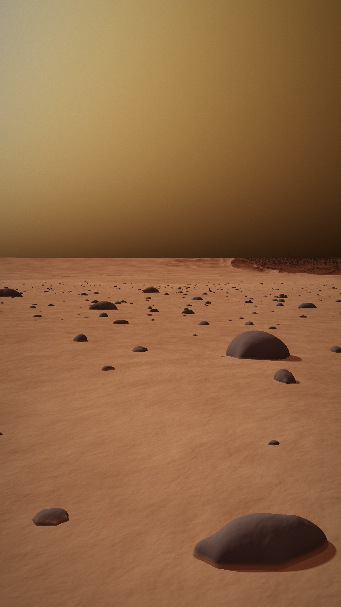
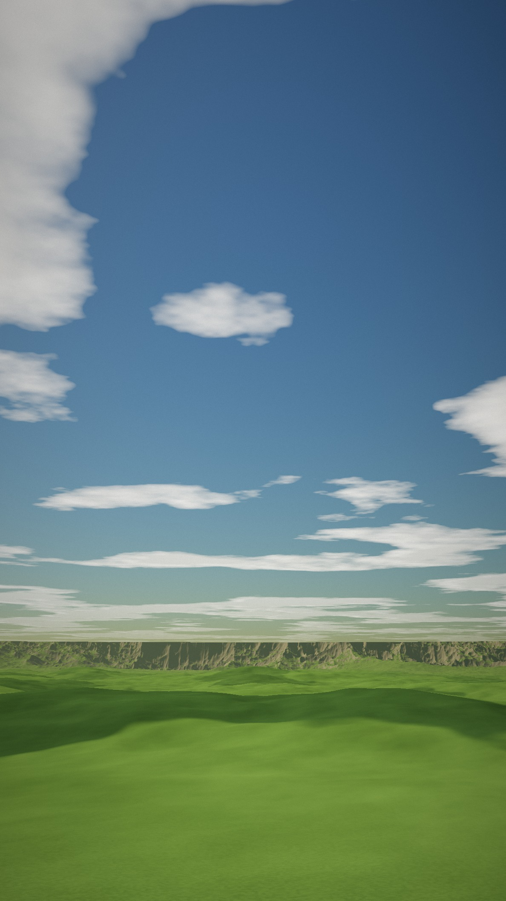
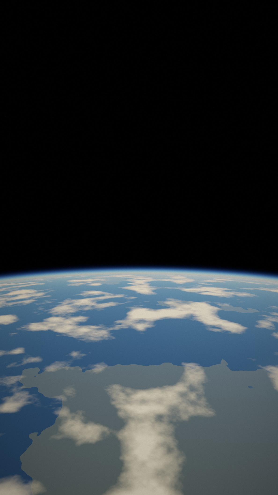
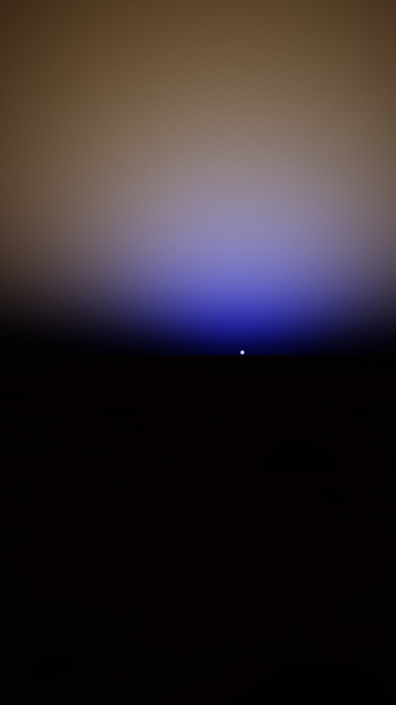

Ayda gündüz də göy
QARADIR.

Marsda isə göy
SARIMTIL-
QƏHVƏYİDİR.

?
Bəs Yerdə niyə
MAVİDİR?

Günəş işığı ağ görünür…
amma içində bütün rənglər var.
Havanın kiçik molekulları
mavi işığı hər tərəfə səpir.
×4
qırmızıdan təxminən 4 dəfə çox!
Ayda hava yoxdur — səpiləcək heç nə yoxdur.
Marsda isə toz mavini udur.

Ən maraqlısı:
Marsda qürub
MAVİDİR!
Göyün rəngi —
atmosferin imzasıdır.
↗ Dostuna göndər